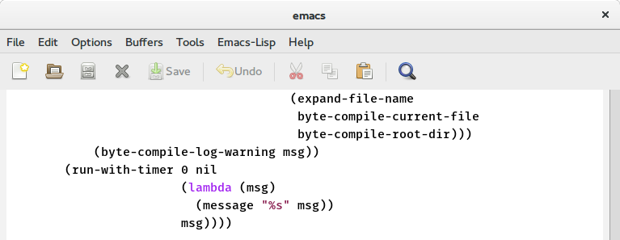

GNU Emacs
An extensible, customizable, free/libre text editor — and more.
At its core is an interpreter for Emacs Lisp, a dialect of the Lisp programming language with extensions to support text editing.
The features of GNU Emacs include
- Content-aware editing modes, including syntax coloring, for many file types.
- Complete built-in documentation, including a tutorial for new users.
- Full Unicode support for nearly all human languages and their scripts.
- Highly customizable, using Emacs Lisp code or a graphical interface.
- An entire ecosystem of functionality beyond text editing, including a project planner, mail and news reader, debugger interface, calendar, and more.
- A packaging system for downloading and installing extensions.
Discover Emacs in video
- @emacsrocks ;; episode 14"Paredit"
- @emacsrocks ;; episode 13"multiple-cursors"
- @emacsrocks ;; episode 12"Working with HTML"
Watch more episodes on Emacsrocks.com.
Emacs 24.5 − latest release
The current stable release is 24.5 (released April 10, 2015;
see also dates of older releases).
To obtain it, visit the download
page.
Emacs 24 has a wide variety of new features, including:
- A packaging system and interface (M-x list-packages) for downloading and installing extensions. A default package archive is hosted by GNU and maintained by the Emacs developers.
- Support for displaying and editing bidirectional text, including right-to-left scripts such as Arabic and Hebrew.
- Support for lexical scoping in Emacs Lisp.
- Improvements to the Custom Themes system (M-x customize-themes).
- Unified and improved completion system in many modes and packages.
- Built-in support for GnuTLS, GTK+ 3, ImageMagick, SELinux, and Libxml2.
For more information, read the News file.